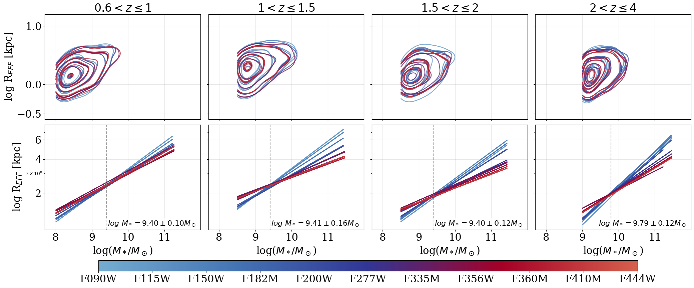

Data Release 2
CANUCS/Technicolor Data Release 2: A Catalogue of Galaxy Structural Parameters in up to 29 HST + JWST bands and a Multi-Wavelength Exploration of the Galaxy Size-Mass Relation at 0.6 < z ≤ 4
Merchant and Mowla et al. 2026
This is the second data release (DR2) of the CAnadian NIRISS Unbiased Cluster Survey (CANUCS), a JWST Cycle 1 GTO program targeting 5 lensing clusters and their adjacent flanking fields in parallel (Abell 370, MACS0416, MACS0417, MACS1149, MACS1423). The NIRCam flanking fields provide 5 wide and 9 medium band filters for exceptional spectral sampling, all to ~29 - 30 mag. Three flanking fields (Abell 370, MACS0416, MACS1149) are supplemented by the JWST in Technicolor program, a Cycle 2 follow-up GO program, which adds 8 wide, medium, and narrow band filters to the flanking fields. This provides photometry with all available wide and medium band NIRCam filters over~ 30 square arcmin.
This release contains morphological parameters for ~41,000 galaxies in the CANUCS NIRCam flanking fields (NCFs) in up to 29 JWST+HST filters from GALFIT (Peng et. al. 2002, 2010) single-component Sérsic fits. We provide filter-by-filter measurements and associated uncertainties of structural parameters including the best-fit effective (half-light) radius, circularized effective radius, Sersic index, and axis ratio. We also provide the median effective radius across all filters, and rest-frame optical and near-infrared sizes, corresponding to 0.5 and 1.5 microns respectively. Quality flags indicating Sérsic index and axis ratio convergence in GALFIT are provided.
A companion release of morphological parameters of galaxies in the CANUCS cluster fields (CLU) from the combined CANUCS and JUMPS programs (JWST Ultimate Medium-band Photometric Survey; ID: 5890; PI: Withers, Muzzin) imaging will be made available by J. Judež et al. in prep.

